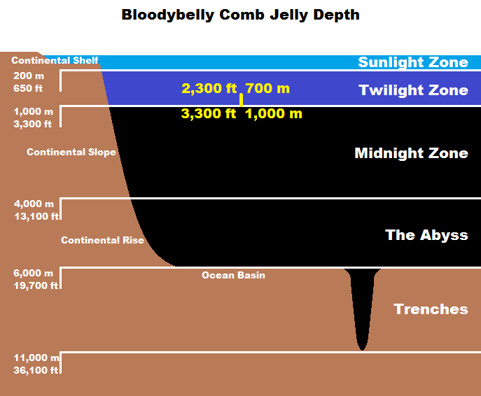
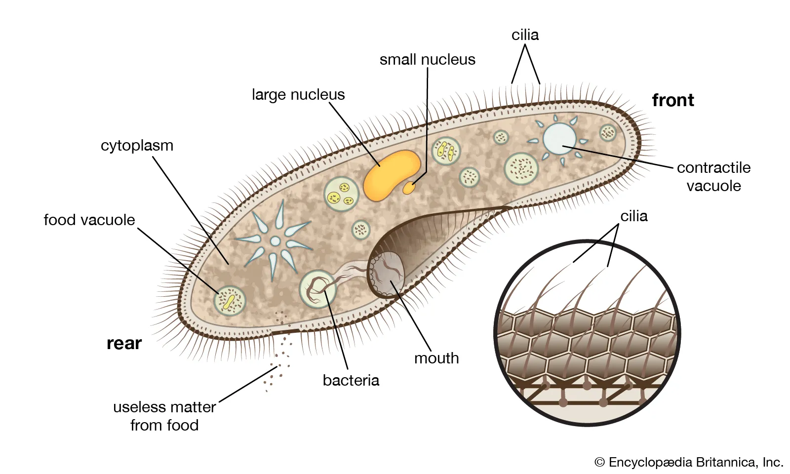
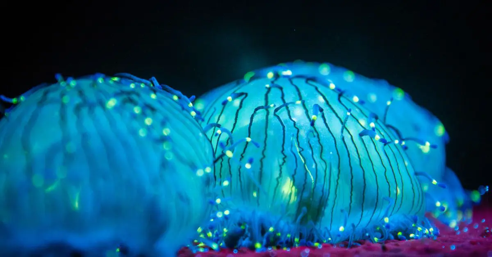

Bloodybelly Combs are found from Canada to California. Several also live in Japanese waters. They inhabit the twilight zone. In other words, 400-1,000m below sea level. The water is 3.9°C, and oxygen levels are at 3%.
These jellyfish are coloured bright red. However, red wavelengths cannot travel in the deep ocean, so they appear black there. Cilia, a hair-like object covers its entire body. Cilia are transparent and reflect light, giving the impression that Bloodybelly Combs sparkle. This species uses cilia to move around. For this reason, they aren't considered true jellyfish as they lack tentacles. They also have sticky cells instead of stinging cells. These jellies range from 1.5-16cm tall and 1.2-10cm wide.
This species was first discovered in 1979 and studied in 2003. Much information is still unknown about this species. What we do know is that it eats bioluminescent plankton, which causes its feces to sparkle.
Deep sea animals tend to start “melting” when they aren’t under the ocean’s pressure. George Matsumoto of the Monterey Bay Aquarium Research Institute said that he feared the jellyfish would not be displayed. “...When I was doing research, we would collect it, and I would be looking at it on the ship in the collection container, and it would melt and turn the water red.” “It was so sensitive to temperature change, I thought it could not be displayed.” He also describes how he never had a Bloodybelly Comb suitable for microscopic research.
Back To Top